Contents
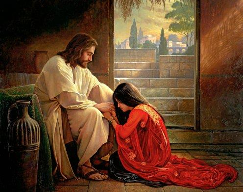
Yahushua came to Earth to carry out what is stated in The Heavenly Scroll. In Hebrew called the Mazzaroth. Also know as the Zodiac, which was corrupted by Babylon. The Plan of Salvation is described in the Heavenly Scroll as a marriage covenant in which the Messiah is the Groom and the other Children of יהוה are the Bride.
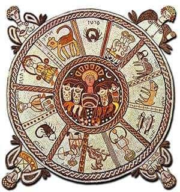
Astrology vs Astromony
DISCLAIMER: The studies presented on this page do not embrace the teachings of astrology.
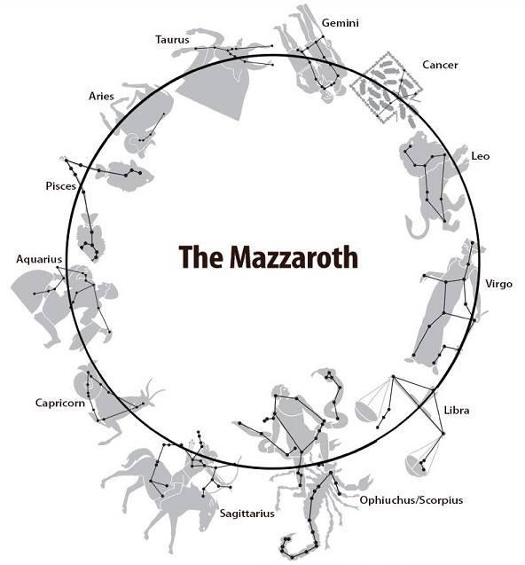
For more info on this download the Book of EW Bullinger – Witness of the Stars in the Resourses.
Yahushua was then forced to experience life on Earth, as we all must, in order to prepare for his responsibilities as the Groom, King, and High Priest. Through tangible examples, rehearsals, difficulties, and tribulations through a process known as sanctification, we progress in spiritual things during this life on Earth, which serves as our training ground.
Yochanan/John 17:19-21
And for their sakes (as a Light to the Nations/example to follow) I sanctify myself (in this life), that they also might be sanctified through the Truth (by following my example the True Way that leads to eternal life). 20 Neither pray I for these alone, but for them also which shall believe on me through their word; 21 That they all may be yachad; as you, Father, are in me, and I in you, that they also may be yachad in us: that the world may believe that you have sent me.
The most fundamental of all Biblical covenants (and Father's Commandment) requires us to get married and have children. One cannot overstate the significance of being married because this is where Yahushua would have received his training as The Groom and would have learned about his responsibilities as the High Priest and King of his own household. Marriage serves the same function in all of our lives. By sharing our lives with one another in a loving covenant, we learn via that most important covenant about the close relationship we have with our Father and what it means for "the two to become One" in Mind, Will, Purpose, and
Spirit. These essential tenets are necessary for Yahushua to serve as the Bridegroom and High Priest for all of eternity.
There was no other way for Yahushua to have acquired these essential skills necessary for him to serve as the Groom, High Priest, and King for all of Eternity. He had the opportunity to experience first-hand what it meant to love his wife Myriam Magdalene so deeply that he would lay down his life for her.
The belief that Yahushua was a "God," and as such, was unable to be married or have children, is the human tradition that has gained the support of humanity. According to the false belief, he would have a line of demigod ancestors if he were a "God."
Definition of demi-god demigod /ˈdɛmɪɡɒd/ noun noun: demi-god
1. a being with partial or lesser divine status, such as a minor deity, the offspring of a god and a mortal, or a mortal raised to divine rank. "some Roman emperors claimed descent from demigods such as Hercules"
o a man who is greatly admired or respected.
"a former juvenile delinquent who would become a counterculture demigod"
This is where stories like The Da Vinci Code and the idea that Earth's kings have a divine right to reign because they are Yahushua's descendants come from. The Royal Family of England's House of Windsor still holds the belief that they are the bodily descendants of "Jesus" and as a result, possess a Divine Right to rule this planet.
Definition of human
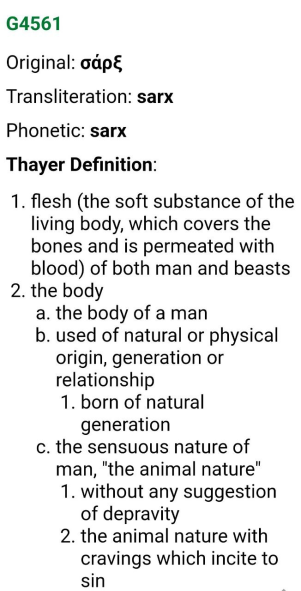
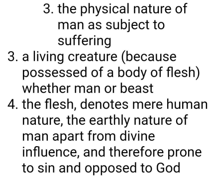
Yahushua was not a "god"; rather, he was born of two natural parents! He was a special person in human history who received the Father's anointing. There is no more inheritance through bloodline after Yahushua as he lives and will never die, and יהוה's Spiritual Inheritance is given to all HIS CHILDREN through covenant as we are co-heirs, so if he had children—which I will prove he most likely did—they would be normal children without any Divine Rights as Yahushua is the Eternal High Priest and King. The Kingdom is not physically founded on human blood, but rather is spiritually based on the Ruach.
Demigods were revered and believed to exist. They practiced the Babylonian Mystery Religion, which had a trinitarian deity, a divine spouse, and a divine child who appeared on Earth dressed as Ba'al's fleshly servants. Since they believed Myriam (Mary), the mother of Yahushua, to be the Divine Mother of God and Queen of Heaven, there was no room in their beliefs for The Messiah to be human and married with a wife. Greek culture was predominately a "gay society," and the false picture they developed of Yahushua (Jesus) was based on an extremely effeminate, gay Greek demi-god with "no attraction for women" who was unmarried, lawless, and had long hair. This is the fake Messiah figure that was forewarned about in Scripture.
Yet even now, we still believe that stereotype!
Everything that Yahushua performed is described in the Gospels as having a physical and spiritual parallel because he actually brought about the salvation plan in his own life. His ministry begins as he marries Myriam of Bethany/Magdala and performs The Heavenly Wedding preordained in the stars on Earth. He then pours out Living Water/New Wine at his own wedding feast. His ministry begins during the Wedding Supper of the Lamb at the beginning of the Age of Aquarius, where Yahushua pours out Living Water/New Wine/The Spirit over His Bride (Feast of Tabernacles). The Greeks minimized this occurrence, altered the translation's wording, and omitted the background information necessary for us to comprehend what was happening. The historical backdrop of Yahushua's mother Myriam keeping an eye on the wine and then visiting Yahushua to replenish the wine for his guests is never explained.
The Gospels depict a very close bond between Yeshua and his beloved Myriam Magdalene (the Disciple Yahushua Loved most or in a different way than the rest). Love that is said to "yearn for, to desire." She was his loved one, which is how we would phrase it now since that is how we refer to family members in English. Never leaving Yahushua's side, Myriam Magdalene went everywhere he did. Only a wife would go alone and spend nights with a group of men in that culture; women did not travel with their Rabbis and did not sit at the feet of their male teachers. In Yahushua's lap, on his shoulder, in his ear, and while washing his feet, we saw Myriam Magdalene.
The Messiah was accessible to Myriam Magdalene in a way that no one else could match. We simply reject the fact that Myriam of Bethany/Magdalene played the role of his wife in front of our eyes on the pages of Scripture in favour of a Greek Gay Demi-god.
Scripture generally respects the privacy of individuals who have been called by Elohim. Although the NT makes no mention of any of the men's wives, it is thought that they were all married. We do not worship them as a god, therefore we do not deprive them that essential relationship through which יהוה prepares them for His Kingdom. Because Scripture never makes the assertion that Yahushua was single, that is the sole reason we think he wasn't married. However, because of our Greek mentality, we dismiss all "facts and data" that suggest differently.
Yahushua was a fully human being who experienced everything we do while serving as an efficient Eternal High Priest. He followed יהוה's commands to get married and have children; he didn't come to this place to flout them all and be the exception!
Yahushua would have needed to learn this through human marriage in order to be qualified for the roles of The Groom, High Priest, and King in the hereafter. This covenant he was making with יהוה calls for the two to become One in Mind, Will, Purpose, and Spirit.
The foundation of human civilization, marriage has numerous blessings, invaluable lessons, difficulties, and tribulations that can only be encountered through this relationship. Yahushua had to have the same human life as those for whom he intercedes in order to "sympathize with our weakness" as their High Priest. In particular, marriage is the most important human experience. He would be a useless High Priest if he had never been married.
Ib’rim/Hebrews 4:15 For we do not have a High Priest who is unable to empathize with our weaknesses, but we have a High Priest who has been tempted in every way (and the most important human experience is Marriage), just as we are--yet he did not sin in the office of High Priest.
Ib’rim/Hebrews 2:16-18 16 For surely it is not the angels he helps, but the descendants of Avraham. 17 So he had to be made like his brothers FULLY HUMAN IN EVERY WAY, that (because he was tempted in all human experiences) he might become (after a life of training) a merciful and faithful
High Priest in service to יהוה, in order to make atonement for the sins of the people. 18 Because he himself suffered when he was tempted (in his human experiences), he is able to help those who are being tempted (in theirs)
As with the Virgin Birth, the Incarnation, etc., this denial of Yahushua's humanity, rights to marriage, and human experiences is yet another falsehood that deprives Yahushua of his function as Messiah. It portrays Yahushua as the exception rather than the rule, depriving him of the most essential covenant in human life as well as the pleasures that יהוה longs for all of His Sons. "It is not good for a man to be alone," declares יהוה, and Yahushua The Messiah is included in that statement. יהוה never uses ambiguity in his speech. These things ought to be taken for granted, and if Yahushua is the exception, that needs to be made clear.
We have two opposing viewpoints:
Position #1: The Spirit of the False Messiah, who claims that the evidence is false and that he was never married since he was a God. Yahushua chose which Commandments to follow selectively, abolished The Law, and was exempt from the Marriage Covenant and childbearing obligations because he was God and nothing that applied to us ordinary humans applied to him.
#2 Position: The Spirit of יהוה (Yahushua took on human form) - He was fully human, and all the evidence points to his being married. Even Yeshayahu/Isaiah prophesied that he would see his offspring, among other things. Since he had to be created similarly to the rest of us, his responsibility was to come and receive training like every other man before accepting the Office of High Priest and performing the duties of that position with compassion. It is expected that Yahushua observed all of יהוה's commandments, including those regarding marriage and procreation, therefore it is not necessary to declare it explicitly.
The assumption that all men in that language/cultural context and among the Children of יהוה engaged into this fundamentally important covenant bond should have prevented the question of "was he married" from ever being raised. How can he be the High Priest and understand our frailty if he is not? should have been the correct phrase.
Because we have raised Yahushua to the status of God in human form (blasphemy, The Spirit of the False Messiah, and the "Mystery" in Mystery Babylon), we deny him the instruction in righteousness that can only be acquired via matrimony. Therefore, let's put this problem into perspective. Let's examine Yahushua's life and his interactions with Myriam of Bethany/Magdalene in the stark light of historical context.
All facets of the Hebrew language and cultural matrix were disregarded by the Greeks. They set out to change the Hebrew Messiah from anointed יהוה's Servant who was fully human in every aspect (and had every right and even obligation to marry) because they HATED the Jews. becoming a Gay Lawless Greek God!
The Scriptures were perverted by the Greek scribes' lying pen in every instance when it ought to have been crystal plain that Yahshua was wed to Myriam Magdalene. They purposefully omitted the name of "his loved one" and minimized her significance as his wife. Even worse, they made up the tale of the harlot at the well and compared Yahushua's wife to a prostitute. As these lies are getting harder and harder to defend near the End of the Age, the Pope just acknowledged this. We can reveal them thanks to our improved knowledge, resources, and other factors. The Greeks even added to the Gospel of Marqos/Mark 16:9, which states that Yesua purified Myriam Magdalene of "seven demons." The claim in Marqos is a part of the Gospel's "longer ending," which was added in the second century and was intended, among other things, to discredit Yeshua/Yahushua' marriage but is not included in the earliest copies.
The Dragon wanted to make Myriam, Yahushua's mother, The Queen of Heaven in the likeness of Ishtar/Tammuz or Madonna/Child. If "Jesus" had been genuinely God in the flesh, which he was not, he could not have been married; otherwise, his wife would have taken on that coveted position. Therefore, they ruined his marriage, gave a false account of Myriam Magdalene, and misrepresented Scripture so that we would not understand.
I'll provide convincing proof that the Scriptures, which mention of Yahushua's wedding and his wife, were mistranslated by modern translators. I'll show that the translation accurately misinterprets what the Greek text actually means. According to the Scriptures, we have abandoned true theology in favour of teachings from devils and human tales (traditions).
2 Timothy 4:1-4 1 Now the Spirit expressly states that in later times some will abandon the faith to follow deceitful spirits and the teachings of demons, 2 influenced by the hypocrisy of liars, whose consciences are seared with a hot iron 3 For the time will come when men will not tolerate sound doctrine, but with itching ears they will gather around themselves teachers to suit their own desires. 4 So they will turn their ears away from the Truth and turn aside to myths.
The absence of any mention of his marital status in the Scriptures serves as evidence that he was wed. It is taken for granted when it comes to the "norm." For instance: It does not say that he obeyed the prohibition against murder! We presume he observed יהוה's Commandments and did not murder anyone because if he had, it would have been explicitly stated because it would be unusual. The argument that he is a murderer because Scripture does not indicate he obeyed the rule not to kill someone is fundamentally similar to the argument that he did not obey the duty to marry and bear children because Scripture does not say he did.
It need not be explicitly stated in the Scriptures that he followed the prohibition against murder. In the same way that marriage is accepted as the norm in that society and is widely regarded to be common information between the author and the audience, we are to presume that this is the case as well.
Only if he wasn't married would it be necessary to clearly mention it (like Sha'ul the Apostle), since that would be out of character for a male in that society. Scripture places more emphasis on the man than his wife and kids because it is he who is the anointed, and his purpose is what matters. In general, Scripture respects people's private lives. What emerges from the recorded life of Yahushua and the historical record is that of loving husband and a devoted wife. To our own detriment, we have been taught to disregard the historical background, the Hebrew culture, and Scripture and to uncritically adopt Greek human practices.
2 Kephah/2 Peter 315Sha’ul wrote to you, according to the wisdom given to him, 16as also in all his letters, speaking in them concerning these matters, in which some are hard to understand, which those who are untaught and unstable (Greeks) twist to their own destruction, as they do also the other Scriptures (they twist every other book and author's writings too).
Again, the Messiah must carry out the Father's Will as it is recorded in the Heavenly Scroll and revealed through His Prophets, as well as יהוה's Will in His capacity as a human being as revealed in the Torah. The Battle of the Ages between The Son of Man and The Dragon, which is described in the first words of Scripture (Bereshit/Genesis 3:15—"he will crush your head, and you will strike his heel"), unfolds in the physical life of The Messiah when he completes The Heavenly Scroll. Yahushua fights the Dragon's offspring as the fulfillment of The Son of Man (ORION, OPHIUCHUS) (Jewish Chief Priests and Pharisees). The Dragon prevails in a brief struggle and is successful in striking The Son of Man in the heel (Yahushua is executed). As soon as The Son of Man vanquishes death and destroys the serpent's head, the Dragon swiftly recognizes she has lost the battle. The Heavenly Scroll's prophecies were carried out in Yahushua the Messiah's life, making them all come true.
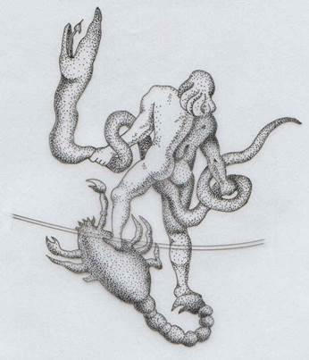
OPHIUCHUS BATTLING THE SERPENT WHO STRIKES HIS HEEL AND HE CRUSHES ITS HEAD.
We should anticipate that Yahushua's ministry will begin with his own wedding as he fulfills his duty as the Groom on Earth as it is written in The Heavenly Scroll. Yahushua must fulfill The Heavenly Scroll.
Ib’rim/Hebrews 10:7 Then I said, Here I am--it is written about me in The Heavenly Scroll-- I have come to do Your Will, my Elohim! (Matt. 6:10)
Mattithyahu/Matthew 6:10 Your Kingdom (declared in heaven Matt. 4:17) come, Your Will be done, on Earth as it is (written) in (The) Heaven (ly Scroll Tehillim/Psalm 19).
Tehillim/Psalm 19:1-6 1 The Heavenly Scroll are telling of the Esteem of יהוה (the Glory of יהוה is Yahushua! Qorontiyim Bet/2 Corinthians 4:6); And their expanse is declaring the Work of His Hands. 2 Day to day (The Heavenly Scroll) pours forth speech, And night to night reveals knowledge (and it is for a LACK of that knowledge we are destroyed… Hosheah/Hosea
4:6). 3 There is no speech, nor are there words; Their (signs of the Zodiac/constellations) voice is not heard. 4 Their line (Zodiac means line/path/way of the Sun) has gone out through (and seen by) all the Earth, And their (signs of The Heavenly Scroll) utterances to the end of the world. In them (the constellations) He has placed a tent for the Sun (the Zodiac), 5 Which is as a Bridegroom (Yahushua) coming out of his chamber; It rejoices as a strong man (ORION The Son of Man) to run his course (of a wedding to pay the dowry, redeem his Bride, marry his Bride, and rule Creation – The Feast
Cycle). 6 Its (the Sun's) rising is from one end of the heavens (The Heavenly Scroll), And its circuit (Zodiac means circuit or path or The Way) to the other end of them; And there is nothing hidden from its Light/Revelation.
Yeshuyahu/Isaiah 48:11-15 11 For My Own Sake, for My Own Sake I will do it; for how could dishonor come to My Name (יהוה)? I will not give My Esteem (as Creator) to another (not even Yahushua Yeshayahu/Isaiah
44:24)! 12 Listen to Me, O Ya’aqov and Yisra’el, My Called; I am He; I am the Aleph, I also am the Tav (means ‘Unity and Perfection’ the ONE and ONLY Elohim Yochanan/John 17:3). 13 My hand has laid the foundation of the Earth (He alone is Creator and did it all by Himself Yeshayahu/Isaiah 44:24), and My Right Hand has spanned (Authored) The Heavenly Scroll (Tehillim/Psalm 19); when I summon the Sun/stars/constellations together, they will minister together (to proclaim The Messiah/Plan of
Salvation Tehillim 19). 14 All of you, gather yourselves together and hear (what the stars proclaim day after day, night after night Tehillim/ 19)! Who among them has foretold these things? יהוה has loved him (spoken of in The Heavenly Scroll; Yahushua); He will do his pleasure on Babylon, and his arm will be on the Chaldeans. 15 I, even I, have spoken (LOGOS/DEBAR); yes, I have called him (Yahushua Luqas 4:18). I have brought him (forth as The Branch as My Eternal High
Priest see Zekaryah/Zechariah Chapter 3), and his Way, (example of Mikveh, Circumcision, and Offering) will succeed in producing Righteousness and Resurrection, called The Way).
Yahushua's own words make it clear that the Human Marriage Covenant is the primary covenant between a man and a woman. Yahushua came to obey יהוה’s Commandments not break them or ignore them as if they do not apply to him because he is a God.
As shown in the passage from Matt. 19 below, Yahushua knew that it was His Father's Will for a man and woman to get married, and He would never go against His Father's Will!
Mattithyahu/Matthew 19:4-6 4 Yahushua answered, Have you not read that from the beginning The Creator ‘made them male and female’ 5 and commanded, For this reason a man will leave his father and mother and be united to his wife, and the two will become One flesh? 6 So they are no longer two, but One flesh. Therefore, what יהוה has joined together, let man not separate.
We "bear fruit" in that most fundamental of all Commandments and covenants. In a spiritual marriage covenant with our Groom, we (as the Bride) bear fruit for The Kingdom of יהוה. This is another physical to spiritual parallel. In that marriage covenant, the bride and groom jointly rule over יהוה's creation in the hereafter as well as in this world as a husband and wife partnership.
Bereshit/Genesis 1:28 יהוה Blessed the man and wife and commanded, Be fruitful and increase in number; fill the Earth and subdue it. Rule over the fish in the sea and the birds in the sky and over every living creature that moves on the ground.
Bereshit/Genesis 2:18 יהוה Elohim said, It is not good for the man to be alone. I will make a helper suitable for him.
Hazon/Revelation 5:9,10 9 And they sang a new song: Worthy are You to take The Heavenly Scroll and open its seals, because You were slain (at the fullness of time / end of the Age of ARIES when the Lamb dies), and by your blood you purchased (paid the dowry/redeemed) for יהוה those from every tribe and tongue and people and nation (to be your Bride). 10 You have made them into a Kingdom, Priests to serve our God, and they will reign on the Earth.
The question then should never have been “was Yahushua married?”; but rather “how could Yahushua fulfill The Heavenly Scroll on Earth and be obedient to יהוה’s Instruction and not be married!”
Yahushua had to undergo training in order to fulfill his spiritual destiny, and this training included and was notably emphasized in marriage.
Ib’rim/Hebrews 5:8,9 8 though he was a Son, yet he learned obedience (to יהוה) by the things (human experiences) which he suffered (during his life on Earth to be trained to perfection). 9 And having been perfected (in this life for his role in the next), he became (after his life on Earth training) the Author of Eternal Salvation to all who obey follow his example (The Way).
If Yahushua's example included breaking the Marriage Covenant, failing to have children, and acting inappropriately with other men in public, then THAT IS WHAT YOU SHOULD BE DOING IN YOUR LIFE (Yochanan Aleph/1 John 2:6). In Zekaryah/Zechariah Chapter 3, it is stated that after Myriam Magdalene's husband had achieved perfection in this life as The Groom, Priest, and King of his own household (as all men must do through their own marriages by Divine Decree), he would then be eligible to hold those positions in his Father's household.
Zekaryah/Zechariah 3:7 This is what יהוה Almighty says: IF you will walk in obedience to Me and keep My Commandments (marriage and reproduction are the first two), THEN (once you are trained to Perfection through a life on Earth) you will govern My House (LEO/King) and have charge of My Courts (eternal Shophtim/Judge Qor. Bet/2 Cor 5:10, TAURUS).
Yahushua would have completed the prerequisite predictions of The Messiah that he would see his descendants in addition to the requirements of The Heavenly Scroll and יהוה's Commandments to all of mankind by getting married and having children.
Yeshayahu/Isaiah 53:10 Yet it was יהוה's Will to crush him and cause him to suffer, and though Yahushua makes his life a guilt Offering, he will see his offspring and prolong his days, and the Will of יהוה will prosper in his hand.
Yahushua would not succeed as the Messiah if he were a single, gay Greek demi-god with no offspring. In Yahushua's life, every prophecy about The Coming King was realized. His marriage is described in great detail in Tehillim/Psalm 45.
Tehillim/Psalm 45:1-17 1 My heart is stirred by a noble theme as I recite my verses for the King; my tongue is the pen of a skillful writer. 2 You are the most excellent of men and your lips have been anointed with Grace, since יהוה has blessed you forever. 3 Gird your sword on your side, you mighty one; clothe yourself with splendor and majesty. 4 In your majesty ride forth victoriously (ORION) in the cause of Truth, Humility and Justice (TAURUS); let your right hand achieve awesome deeds. 5 Let your sharp arrows pierce the hearts (CAPRICORNUS) of the King’s enemies; let the nations fall beneath your feet (LEO). 6 Your Throne, O Elohim (Divine Representative of יהוה’s Power and Majesty – h430 ‘elohim’ Thayer’s – “1 plural in number. a. rulers, judges, either as Divine representatives at sacred places or as reflecting the Divine Majesty and Power of God”), will last for ever and ever; a Scepter of Justice (TAURUS) will be the Scepter of your Kingdom (LEO). 7 You love Righteousness (VIRGO) and hate wickedness (SAGITTARIUS); therefore יהוה, your God (and my God John 20:7), has set you above your companions by anointing you (Luke 4:17,18) with the oil of joy (he is NOT a god, he is our brother and has preeminence as Firstborn and heir to The Throne). 8 All your robes are fragrant with myrrh and aloes and cassia; from palaces adorned with ivory the music of the strings makes you glad. 9 Daughters of Kings are among your honored women; at your right hand is the Royal Bride in gold of Ophir. 10 Listen, Daughter, and pay careful attention: Forget your people and your father’s house. 11 Let the King be enthralled by your beauty; Honor him, for he is your Master (John 20:2). 12 The city of Tyre will come with a gift, people of wealth will seek your favor. 13 All Glorious is the Princess within her chamber; her gown is interwoven with gold. 14 In embroidered garments she is led to the King; her virgin companions follow her— those brought to be with her. 15 Led in with Joy and Gladness, they enter the palace of the King. 16 Your Sons will take the place of your fathers; you will make them Princes throughout the land. 17 I will perpetuate your memory through all generations; therefore the Nations will Praise you for ever and ever.
Yahushua was either The Messiah because he lived according to these prophecies in his life, or he wasn't. Be selective about your beliefs because everything is either true or not.
Yahushua's Family Tomb was discovered recently by archaeologists. Jews only buried their spouses or blood relations in family tombs according to Jewish tradition in the first century. Along with Myriam, his mother, and his siblings, Yahushua's ossuary (a bone box) was found in the grave; Myriam could only have been there if she had been Yahushua's wife. Only "his loved ones"—his close family and wife—were discovered in his tomb; no other Disciple's ossuaries were there.
It was customary for the mother of the groom to oversee the wedding feast in first-century Hebrew culture. In order to prevent the guests from running out of wine, the main duty would be to keep an eye on the supply. The groom is supposed to bring the wine, but he needs his mother's help because he is preoccupied with wedding preparations. If the wine supply was running low, the bridegroom's mother would let him know, and he would make sure that the guests had access to extra wine. Yahushua and his mother Myriam/Mary played those roles in the marriage that launched his journey to complete The Heavenly Wedding, as will be demonstrated further on in this study.
The Greek Original Text will show that what we've put in our English translation of Scripture is the exact reverse of what it says in the Greek original. The "miracle of converting water into wine" actually refers to Yahushua's wedding, as the literal translation demonstrates.
Yochanan/John 2:1-5 1 Yahushua was marrying Myriam/Mary of Bethany in Cana of Galilee on the Third Day of the week (Physical to Spiritual Parallel of when the Bearer of Living Water and Manna Mikveh’s the Earth; on the Third Day/Kingdom Reign, the Age of AQUARIUS, after the Age of PISCES/2 Prophetic Days when he paid the dowry for his Bride). Myriam (Mary), the mother of Yahushua, was there in charge of the wedding activities; 2 with Yahushua (the Groom) and the Disciples he invited to his wedding. 3 Myriam (Mary) the mother of the Groom (Yahushua) noticed they were deficient of wine and went to the Groom and informed him so he could bring out more wine (In Hebrew weddings, it is the responsibility of the Groom to provide the wine; and it is the responsibility of the Mother of the Groom to be in charge of the wedding feast and to watch over the wine supply because the Groom was busy with the wedding activities). 4 Yahushua says with concern what can I do (g1473 – ‘concern, what have I to do’) for you (g4771 ‘to you’) Mother (g3384)? (now his mother, the one in charge of the wedding feast, informs him they are low on wine) Show to me (g1473 – ‘to me’) which (g5101 ‘what, which’) wine skins; and also (g2532 – ‘also’) how many so I can refill them? I have limited time (g5610 – ‘limited time’), I (g1473 – ‘I’) do not have to be present (g2240 – ‘be present’) in the wedding activities just yet. 5 His mother said to the servants of the wedding; do whatever my son, the Groom, says to do.
Let’s dissect those verses to show that this is what the Original Greek actually says. Being "looking over the wine" at another man's wedding and making fun of the mother of the real groom would have been extremely insulting. If the Groom
had not been given the honour of delivering the wine, it would have been even more disrespectful!
Yahushua and his mother would never act inappropriate at another wedding event in that way.
The Greeks misinterpreted the Scriptures, deliberately omitting the name of the disciple whom Yahushua loved most (his beloved), and painted a picture of a lawless, effeminate, probably "gay" Greek demi-god; nevertheless, this is not what the Scriptures say about my King.
Unlike the Greeks and Romans, the Hebrews did not have a homophobic culture. A guy's head should never be placed on an older man's lap, whether he is a young man or an adult. Greek men had what they called "younger brothers"—basically gay male prostitutes—who they referred to as such. This is known as pederasty, from whence the word "pedophile" derives, and it was literally "the main cultural paradigm" of that depraved society. You can find your English Bible in a culture that subjugated the Jews and TRANSLATED the Scriptures into Greek.
https://en.wikipedia.org/wiki/Pederasty_in_ancient_Greece Pederasty in ancient Greece Pederasty in ancient Greece was a socially acknowledged romantic relationship between an adult male (the erastes) and a younger male (the eromenos) usually in his teens. It was characteristic of the Archaic and Classical periods. The influence of pederasty on Greek culture of these periods was so pervasive that it has been called "the principal cultural model for free relationships between citizens."
Men in the Hebrew culture simply did not behave in such a way as to recline with their heads on each other's shoulders and lie in each other's laps in public or in private. Men acting impolitely with another guy (or even just a single woman) as they would with their wife is an affront to our Father.
Additionally, Luqas 10:39 states that a woman did not accompany a male teacher or rabbi and did not sit at his feet. She definitely didn't travel and spend the night with a bunch of guys! In public, a single woman did not approach a single man to recline on his chest, place her head on his lap, massage him with pricey oils, or wipe his body with her hair. These are all unmistakably highly private interactions meant only for husband and wife.
Yahushua would not have been regarded as a Rabbi and The Messiah; instead, he would have been stoned to death if he had acted in this manner in front of other men or while traveling for days with a lone lady who connected with him in such personal ways but was not his wife.
A number of Gnostic works, typically from the second and third centuries, depict Myriam Magdalene in a far different light than the Canonical Gospels do. Myriam Magdalene is one of Yahushua's most significant disciples, whom he loved more than the others, according to Gnostic literature (maybe that is why these accounts were rejected by the Roman Catholic Church and left out of the cannon). As Yahushua's life partner/wife, Myriam Magdalene is identified in the Gnostic Gospel of Philip. The envy and conflicts between Kepha/Peter and the other Disciples, particularly Myriam Magdalene, are described in gnostic writings. The reason Myriam, Yahushua's wife, was trusted and loved above the other men and had access to private chats was not because the other men were gay (as all wives are with their beloved husbands).
Gospel of Philip There were three who always walked with the Master: Myriam (Mary) his mother, and her sister, and Myriam Magdalene who was called his companion (Wife).
Gospel of Mary Magdalene
5:5) Kepha (Peter) said to Myriam, Sister we know that the Saviour loved you more than the rest of woman. 6) Tell us the words of the Saviour which you remember which you know, but we do not, nor have we heard them. 7) Myriam answered and said, What is hidden from you I will proclaim to you
9: 1) When Myriam had said this, she fell silent, since it was to this point that the Saviour had spoken with her. 2) But Andrew answered and said to the brethren, Say what you wish to say about what she has said. I at least do not believe that the Saviour said this. For certainly these teachings are strange ideas. 3) Kepha answered and spoke concerning these same things. 4) He questioned them about the Saviour: Did He really speak privately with a woman and not openly to us? Are we to turn about and all listen to her? Did He prefer her to us? 5) Then Myriam wept and said to Kepha, My brother Kepha, what do you think? Do you think that I have thought this up myself in my heart, or that I am lying about the Saviour? 6) Levi answered and said to Kepha, Kepha you have always been hot tempered. 7) Now I see you contending against the woman like the adversaries. 8) But if the Saviour made her worthy, who are you indeed to reject her? Surely the Saviour knows her very well. 9) That is why He loved her more than us. Rather let us be ashamed and put on the perfect Man, and separate as He commanded us and preach the gospel, not laying down any other rule or other law beyond what the Saviour said.
The idea is that where it appears that Myriam was there with "another Disciple whom Yahushua loved" were later modifications, hastily made to approve the Gospel in the late 2nd century, in order to make this claim (that Myriam was his beloved wife) and maintain consistency with Scripture (because the Greeks did not want a human married Christ and any Gospel that spoke of this was not authorized). The Beloved Disciple and Myriam Magdalene are said to appear to be two different people in both situations, which is said to be inconsistent both internally and in relation to the synoptic Gospels. This inconsistency may have resulted from sloppy editing.
The phrase "disciple he loved most" is just a misplaced modifier. In the translation, it was placed next to "another disciple" rather than Myriam!
It was customary for those closest to the deceased to prepare his body for burial in the first-century Hebrew culture. His wife would play that part. His mother would hold that honour if he had never been married. He was presented to his Father by Myriam Magdalene (also known as Mary of Bethany or Myriam of Magdala), who also prepared his body for burial by placing spices in his tomb as a wife would. It would have been disrespectful to his mother had she not been his wife, and Myriam of Bethany/Mary Magdalene would not have had access to his body either before or after his execution! Like his wife Myriam, who was permitted to go with Yahushua at his trail!
Only family members were allowed in the courtroom during his trial, however Myriam Magdalene was admitted. Because of this, Kepha/Peter was denied entry and barred from the courtroom!
Yochanan/John 18:15,16 15 Shimon Kepha (Peter) and the ‘other Disciple’ [whom יהושע Loved (Myriam Magdalene)] were following יהושע (Myriam Magdalene never left the side of her husband). Because this Disciple was known to the high priest (to be his wife), she went with יהושע into the high priest’s courtyard (you had to be related to the prisoner to enter the courts), 16 but Kepha (Peter) had to wait outside at the door (because he was no relation to Yahushua). The other Disciple (Myriam Magdalene), who was known to the high priest (to be his wife), came back, spoke to the servant girl on duty there and brought Kepha (Peter) in.
The fact that Yahushua was married and that his wife was Myriam Magdalene, the "Disciple known to the High Priests," was well known among the Chief Priests, therefore she was permitted entry into the courtyard during his trial. The other Disciples were able to deny him and get away from his death since the Chief Priests did not know who they were.
Myriam is especially mentioned in Yochanan/John 19:25–27. We have confirmation in this chapter since Yahushua only had his family and wife at his feet. There were NO OTHER Disciples there at his feet; only his wife stood by him the entire time. When Yahushua glanced down at them, he gave his wife the order to take care of his Mother. All those "tough guys" fled.
Marqos/Mark 14:49,50 49 this has happened that the Scriptures would be fulfilled.” 50 Then all His Disciples deserted him and fled.
I’yob/Job 19:13,14 13 "My brothers stay far away from me. 14 My friends are complete strangers to me."
Myriam Magdalene did not flee or hide because she loved her husband more than any of his other disciples (as it should). She was there with her Beloved the entire time, from preparing him with oil to witnessing his trial, being at his feet when he was executed, preparing his body for burial, grieving at the tomb after he passed away, to being the first person Yahushua came to after his Resurrection. Therefore, if she was just a "follower/friend" of Yahushua, this prophecy FAILED. She was his Beloved Wife, whom he loved in a different way and had a much stronger relationship with; as a result, they were "One," and as a result, she never "fled" or was "far from him"!
Just before we see Yahushua urge Myriam Magdalene to take care of her Mother-in-law, Ypchanan/John makes it clear that Myriam Magdalene was the only disciple there at that execution, standing close by Yahushua's mother.
Yochanan/John 19:25-27 25 Near the wooden stake of Yahushua stood his mother (Myriam), his mother’s sister (Martha), Miriam (Mary) the wife of Cleophas, and Myriam of Migdal (Magdalene the Disciple whom he Loved, his Wife). 26 When Yahushua saw his mother there, and the Disciple whom he Loved standing next to her (Myriam Magdalene, all the other Disciples had fled for their lives and went into hiding Marqos/Mark 14:50, his brothers ran I’yov/Job 19:13,14, only his wife stood by his side the entire time, from their Wedding in Bethany to begin his ministry, to anointing him for burial, to weeping at his feet on the stake, to mourning at his tomb, and she was the first one Yahushua came to after his Resurrection because she was his loved one/Wife), he said to her, Mother, here is your [son] Daughter (in law), 27 and to the Talmiyd (his Wife) he said, Here is your Mother (in law). From that time on, his mother was taken in and cared for by this Talmiyd (Yahushua’s family through marriage - Myriam, Martha, and Lazarus) and taken into their home (This is where Yahushua lived and spent most of his time when he was not traveling).
The Greeks, who predominated among that culture's homosexuals, deceived us all by twisting Scripture to show their version of "Jesus" as lacking any interest in women. Even depict our King with younger men (Yochanan/John)
engaging in pederasty while lounging in his lap and resting their heads on his chest. This is a characteristic of the FLASE MESSIAH, not of Yisrael’s True Messiah!
Dani’el 11:37 Neither shall he regard the Elohim of his fathers, nor the desire of women, nor regard any god: for he shall magnify himself above all.
In the Hebrew culture, the notion that Yahushua was practicing pederasty is ridiculous. This is why they never say just who this "Disciple Yahushua Loved" was; by translating His Word falsely, the Greeks ensured that he could be revered as their gay demi-god and that their Pederasty could be upheld.
More than any other disciple, Myriam Magdalene is directly mentioned in the Gospels twelve times. Many more times, she is alluded to in an indirect manner as having played a crucial role in his life as his most dependable and devoted partner.
Originally from Magdala, Myriam Magdalene eventually moved to Bethany with her husband Yahushua, sister Martha, and brother Lazarus in order to be closer to the centre of Yahushua's ministry travels. She goes by the name Mary of Bethany and is the same person.
The majority of Yahushua's time was spent in Bethany, where he lived with his in-laws, Myriam Magdalene, Martha, and Lazarus. They "assumed" Yahushua would have been present and would have healed Lazarus because of this when Lazarus fell ill. He went there to spend time with his family, recover from his travels, and refocus. When he received the news while already on his way "home," he purposefully delayed going home for two days.
No one else in the pages of the Gospels had the same access to Yahushua as his wife, Myriam Magdalene, and his sister-in-law, Martha. even went so far as to approach him and request that he revive their deceased brother Lazarus (Yahushua's brother-in-law) from the dead. Lazarus was referred to as "the one Yahushua loved" once again because he was a brother-in-law and one of Yahushua's cherished ones. However, see how the Greeks gave Lazarus his own name (as he was no threat to their Pederasty or pagan religion of The Mother of God being the Queen of Heaven).
He had to take a chance to return to Bethany even after The Dragon's offspring attempted to kill him because Bethany was where he lived with his wife and family.
Yochanan/John 11:1-8 1And a certain one was sick, El‛azar from Běyth Anyah, the village of Miryam and her sister
Martha. 2 (Now it was Miryam who anointed the Master with perfume and wiped His feet with her hair, whose brother El‛azar was sick). 3 Therefore the sisters sent to Him, saying, “Master, see, he whom You love is sick.” 4 But when יהושע heard, He said, “This sickness is not unto death, (but will be used as a physical illustration. I am the fulfillment of The Esteem of יהוה proclaimed in the stars - The Heavenly Scroll Tehillim/Psalm 19:1 – ‘the stars tell of the Esteem of יהוה and declare His Handiwork’), but for the esteem of Elohim, so that the Son of Elohim might be esteemed by it” (that the Son of יהוה may be Esteemed as the fulfillment of The Heavenly Scroll through it - a Physical to Spiritual Parallel/Act of Power to as Yahushua manifests The Kingdom proclaimed in The Heavenly Scroll on Earth “as it is written in heaven” and confirms he is The Son of Man and fulfills AQUARIUS). 5 Now יהושע loved Martha and her sister and El‛azar. (his loved ones/family) 6 Therefore, when He heard that he was sick, then indeed He stayed at the place where He was, two more days. (to illustrate that in The Heavenly Scroll there are 2 Prophetic Days, the Age of PISCES, before Yahushua would return as the Bearer of Living Water and Manna AQUARIUS raise the dead in covenant with him). 7 Then after two days (a Physical to Spiritual Parallel illustrating of The Age of PISCES) 7 Then after this He said to the taught ones, “Let us go back to Yehuḏah.” 8 The taught ones said to Him, “Rabbi, the Yehuḏim were but now seeking to stone You, and are You going back there?”
The phrase "the one he loved most" was used to refer to his wife, although it was purposefully omitted from the phrase while speaking of her. These words refer to the affection between a brother and a wife. When Yahushua wasn't on the road travelling or teaching, he was at his home base in Bethany, where his wife and her siblings reside. That's why, the night before Pesach, when he was put to death, he was in Bethany, eating dinner quietly with those 3 at their home. Prior to his passing, he was having a private, very intimate moment with his human family.
Yochanan/John 12:1-8 1 Accordingly יהושע, six days before the Pěsaḥ, came to Běyth Anyah, where El‛azar (his brother-in-law) was, who had died, whom He raised from the dead (fulfilling the Bearer of Living Water and Manna AQUARIUS). 2 So they (Myriam and Martha) made Him a supper there, and Martha served, while El‛azar was one of those who sat at the table with Him (together in private, no other Disciples were at his home). 3 Then Miryam took a pound of costly perfume of nard, anointed the feet of יהושע, and wiped His feet with her hair. And the house was filled with the fragrance of the perfume. 4 Then one of His taught ones, Yehuḏah (Yudas the Scicarii) from Qerioth, son of Shim‛on, who was about to deliver Him up, said, 5 “Why was this perfume not sold for three hundred denarii and given to the poor?” 6 And he said this, not because he was concerned about the poor, but because he was a thief, and had the bag, (he said this, not because he was entrusted to manage the money collected to fund The Nazarene Movement) and he used to take what was put in it. 7 יהושע then said, “Let her alone, she (Myriam, his wife) has kept this for the day of My burial. 8 “For the poor you have with you always, but Me you do not have always.”
The only witness to five significant occurrences is Myriam Magdalene:
1. Yahushua's readiness to travel to his Father; 2. Yahushua's crucifixion; 3. Yahushua's preparation for burial and Yahushua's burial; 4. the discovery that his tomb was empty; and 5. Yahushua's manifestation after the Resurrection. Marqos 15:47 and Matt. 27:61 both mention only two individuals: Myriam Magdalene and "the other Mary," who in Marqos is "the mother of Ya’aqov/James." She was one of only a handful to see the site where Yahushua was buried by Yoseph of Arimathea. The witnesses are identified as "the women who had come with
Yahushua from Galilee" in Luqas/Luke 23:55. Other than Nicodemus, no other witnesses to Yoseph's burial of Yeshua/Yahushua are mentioned in Yochanan/John 19:39–42.
According to Marqos 16:1, "...Myriam the mother of Ya’aqov/James, Salome, and Myriam Magdalene bought spices so that they might go to anoint Yahushua's body." One of the arguments used to support the "composite Magdalene" theory, according to which Myiam of Bethany and Myriam of Magdala were the same person who simply relocated from Magdala to Bethany in order to be nearer to her husband Yahushua as he travelled, was the relationship between Yahushua's earlier anointing and his remarks at that time.
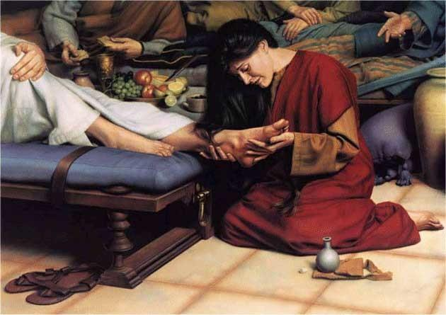
5
We have a great illustration of The Lying Pen of the Scribe in this Chapter, along with teachings from demons and myths. Every translation from today continues to use this incorrect translation.
Timotiyos Bet/2 Timothy 4 1 Now the Spirit expressly states that in later times some will abandon the faith to follow deceitful spirits and the teachings of demons, 2 influenced by the hypocrisy of liars, whose consciences are seared with a hot iron 3 For the time will come when men will not tolerate sound doctrine, but with itching ears they will gather around themselves teachers to suit their own desires. 4 So they will turn their ears away from the Truth and turn aside to myths.
After this study, it will be up to you to determine whether you believe the perverted Bible you read. The beginning of Yochanan/John Chapter 2 is the same as Chapter 1, when there was a flagrant intentional violation of translation and language.
Because the prophecy has been realized, we do not contest these false translations. As a result of our "desire" to worship a man, we surround ourselves with liars whose consciences have been burned by The Spirit of The Dragon and translations that have been shown to be incorrect.
The Creator will repay everyone who profanes His Name and accepts these false translations with TWICE what they owe, and Yahushua will not cover that dowry, so He is not backing down from this.
Yirmeyahu/Jeremiah 16:18-20 18 "I will first doubly repay their iniquity and their sin, because they have polluted My Land; they have filled My Inheritance with the carcasses of their detestable idols and with their abominations." 19 O יהוה, my strength and my stronghold, And my refuge in the day of distress, To You the Nations will come From the ends of the Earth and say, "Our fathers have inherited nothing but lies, total futility and things of no profit." 20 Can man make gods for himself (elevate The Messiah into a god see Rom. 1 the “image of a mortal man who died”)? Yet they (demigods) are not gods!
Let me use our English translations to show the severity of this depravity. No matter how much you may adore your translation, no matter how many large Hebrew words they crammed in there, no matter how difficult it is to read as if that proves it is inspired, no matter whether it is written in Old English as if that is the language יהוה uses, I don't care. You run the risk of losing your eternal life every time you pick up that twisted abomination if it is based on the Incarnation in the Gospel of Yochanan, which states, "He was with God and He was God," and then twists the crucial role of Yahushua to fulfill The Heavenly Scroll and leave The Word of His Testimony out of His Own Word. You will commit blasphemy if you keep it, and your ideology will be founded solely on isolated quotes and outright lies. Where can we find the Truth, in context, if we do that, though? We have serious issues.
The Greek Interlinear translation is included of this paragraph below so that it can accomplish four goals.
1 Show that the words they twisted into the interlinear are not the Greek words themselves, but rather their context. 2 Show that the English translation of Scripture using the terms below is distorted and out of context, saying the exact opposite of what the original Greek and the Hebraic context of their culture meant. 3. Demonstrate how the translations we use today violate the laws of the Heavenly Scroll. 4 Make it clear that it is illogical and contradicts itself!
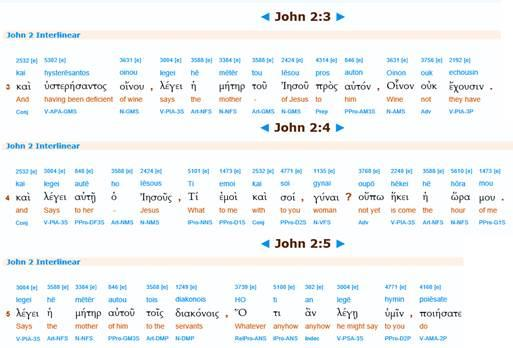
The interlinear as a point of reference is used because it will explain the terms and make sure we all understand what they really mean before setting them in the context of a Hebrew wedding and The Heavenly Scroll. Here is the distorted, contradictory translation of every modern Bible that takes a Hebrew wedding completely out of context and then translates the Greek words incorrectly, turning Yahushua into an unfaithful, disrespectful liar.
Yochanan/John 2:1-5 1 On the Third Day a wedding took place at Cana in Galilee. יהושע’s mother was there, 2 and יהושע and his Disciples had also been invited to the wedding. 3 When the wine was gone, יהושע’s mother said to him, They have no more wine. 4 יהושע said to her: Woman why do you involve me (how is this my concern). 5 His mother said to the servants of the wedding; do whatever my son says to do (he just said he wouldn’t do it!).
Let's take a closer look at it and note a few things.
· • Yahushua's mother Myriam would not be in charge of overseeing the wine supply at another woman's son's wedding because doing so would be extremely disrespectful to the actual wedding party. • Out of respect for the mother of the bride, she would never have gone to Yahushua, even if she had thought it was low. She would have taken this matter to the groom if she hadn't been able to locate the groom's mother (as it is the Grooms responsibility not some random guests). Yahushua wouldn't have accepted anything from her and wouldn't have disrespected the Groom who had invited him to the wedding. She would never have brought this to him. Nothing in this passage suggests that the Groom allowed Yahushua, that they approached him first or at all, or that he was in a tight spot and in need of a "miracle" because he was out of wine.
- Yahushua had not yet worked any miracles at this point. We are taught about this incident as if Yahushua's mother Myriam was aware that her son might work a miracle and that is why she went to him (I suppose we need an explanation since we are not aware of the surrounding circumstances!) • Later, we witness Yahushua treating his own mother with total disdain, saying things like, "Woman, why do you bring this to me" or "Woman, how is this my problem." If my mother had brought something to my attention and I had talked to her in that way... "I wouldn’t see the sun again!" is where I would find myself. If his mother had come to him in distress, Yahushua would never have addressed her in this manner. And if he did, I would never serve him. • Now, based on the translation, Myriam (his mother) orders her servants to disobey Yahushua, who had just stated that it was none of his concern and that his time to perform miracles had not yet come. • Since Yahushua later makes it his business and works a miracle, it is evident that he lied to his mother about it not being his business or taking up any of his time. Yahushua either disregarded God's timing or lied to his mother. • As stated in The Heavenly Scroll, Yahushua did not come to "perform his mother's will," but rather his Heavenly Father's.
Here is the passage's accurate translation from the Greek original, along with a historical account of a Hebrew wedding.
Yochanan/John 2:1-5 1 יהושע was marrying Mriamy of Bethany in Cana of Galilee on the Third Day of the week (Physical to Spiritual Parallel of when the Bearer of Living Water and Manna Mikveh’s the Earth; on the Third
Day/Kingdom Reign, the Age of AQUARIUS, after the Age of PISCES/2 Prophetic Days when he paid the dowry for his Bride). Myriam (Mary), the mother of יהושע, was there in charge of the wedding activities; 2 with יהושע and the Disciples he invited to the wedding. 3 Myriam the mother of the Groom (Yahushua) noticed they were deficient of wine and went to the Groom and informed him so he could bring out more wine (In Hebrew weddings, it is the responsibility of the Groom to provide the wine; and it is the responsibility of the Mother of the Groom to be in charge of the wedding feast and to watch over the wine supply because the Groom was busy with the wedding activities). 4 יהושע says with concern: what can I do (g1473 – ‘concern, what have I to do’) for you (g4771 ‘to you’) Mother (g3384)? (his mother, the one in charge of the wedding feast, informs him they are low on wine) Show to me (g1473 – ‘to me’) which (g5101 ‘what, which’) wine skins; and also (g2532 –
‘also’) how many so I can refill them? I have limited time (g5610 – ‘limited time’), I (g1473 – ‘I’) do not have to be present (g2240 – ‘be present’) in the wedding activities just yet. 5 (having just said he did have a little time to take care of this issue) His mother said to the servants of the wedding; do whatever my son, the Groom, says to do.
The words I highlighted above include the mistranslation. The word "g1473" in verse 4 was rendered as "does not concern/has nothing to do with" Yahushua by the translators. The connotation in Yocahanan 2:4 is quite different from how they translated the word g1473, which is ego and is a very personal pronoun. It implies that Yahushua is deeply concerned about a matter that directly affects him.
We lose a lot in the word-for-word translation, we lose the very personal implication of ego. Below “what does it concern me” word-for-word really means “what is it that concerns me” in proper context of ego. And “what have I to do” means “what is it that I have to do” in context of ego being a very personal pronoun. It expresses concern for something that I need to do, not total disregard for something that needs to be done as it is translated by the Lying Pen of the Scribes.
As we can see, the Greek word for "ego" (g1473) is a pronoun that expresses a profoundly intimate idea. According to how Yocanan 2:4 presents it, it implies worry for something that must be done on a personal level, like taking care of his obligations.
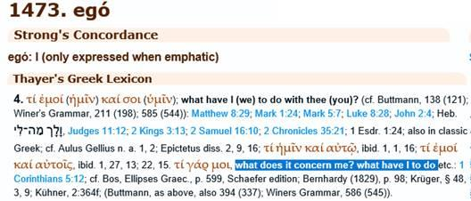
Yahushua understood that something must be awry and required his personal care when Myriam (his mother) approached him while she was over the wedding feast. His "ego" or displays a sense of personal attachment to a task he obviously must complete. The right interpretation and intention are provided by this comprehension of the genuine Greek word for "ego." In a correct translation, the historical context of a Hebrew wedding and the arrival of the groom's mother when the wine is running low fit together wonderfully.
verse 4 Yahushua says with concern: what can I do (g1473 – ‘concern, what have I to do’) for you (g4771 ‘to you’) Mother (g3384)?
In order for the Greek to make meaning in our language, we must add words in English. The terms we add should be selected based on the English language's word and sentence structures (not word-for-word). The text must therefore be read in the context of Scripture, history, and the linguistic and cultural environment of the time it was written.
Instead, we alter the language to match our paganism and then use soundbites that are taken out of context to support it. It doesn't matter if it doesn't make sense, if it contradicts itself and the other Scriptures, if it doesn't fit in the Hebrew language and cultural framework of the first century, if it portrays Yahushua as a haughty, disrespectful jerk to his mother and the Groom, if it causes Yahushua to go against יהוה's Will and Timing, etc.
Now, we are aware that Yahushua confirms Myriam's (Yahushua's mother) request in verse 4. If we maintain the context, we can infer this without contradicting what his mother said in verse 5, where she orders her servants to follow Yahushua. Why did she turn around and order her slaves to follow him as if he had promised to do it if, as these pagan scribes claim, he shot her down and replied NO? Therefore, he must have expressed concern and promised to do it rather than saying it wasn't his business or that he couldn't since it wasn't the right time. This supports my reading in the textual context (text around it), as well as in the historical context of a Hebrew wedding and the spiritual context of The Heavenly Scroll.
The lines g1473, "to me," "which," and "also," followed by g5101, "provide us a hint as to what Yahushua stated after he expressed anxiety over what he needed to perform." Yahushua visits the wine skins and discovers that they are empty. He then fills them with Living Water using knowledge gained from the context of the remainder of this chapter. With that background and the Greek terms, we ought to be able to reassemble the conversation in English to:
4 Yahushua says with concern: what can I do (g1473 – ‘concern, what have I to do’) for you (g4771 ‘to you’) Mother (g3384)? (his mother, the one in charge of the wedding feast, informs him they are low on wine) Show to me (g1473 – ‘to me’) which (g5101 ‘what, which’) wine skins; and also (g2532 – ‘also’) how many so I can refill them?
We are aware that Yahushua had never worked a miracle, and his mother had no right to assume that he would do one here or that he was capable of such things (he was not a god).
Since יהוה, and not Yahushua's mother, directs Yahushua's behaviour, she would never violate יהוה's Will in that fashion in the first place. Later on, in this chapter, it is revealed that Myriam, the person in charge of the wedding feasts, was completely unaware that Yahushua had worked a miracle. Myriam sent her servants because she was not present. She believed that he had the butler bring wine from the cellar.
So, what does Yahushua mean “my hour has not yet come?” as it is translated in our English Bibles? Is he talking about his time to fulfill The Heavenly Scroll with Acts of Power (miracles) as we are led to believe? The words in question are g5610 and g2240 which give us a much clearer picture that harmonizes with the reason a mother would be in charge of the wine supply in the first place. The Groom doesn’t have much time and has to be present in the wedding activities. The word mistranslated out-of-context as ‘hour’ is g5610 which means “limited time to fulfill a purpose” such as, in context of the text here, fulfilling the wine skins not performing miracles!
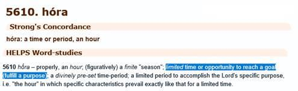
And then g2240 shows us that this word implies “the time has not arrived for him to be present”, again in context the Groom had limited time as he had to be present in the wedding activities.
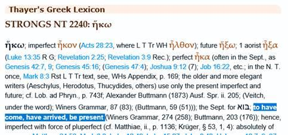
This clarifies Yahushua's response and, taken in context, supports the idea that his role in the wedding requires a limited amount of time because he must be present when certain wedding events begin.
4 I have limited time (g5610 – ‘limited time’), I (g1473 – ‘I’) do not have to be present (g2240 –
‘be present’) in the wedding activities just yet. 5 His mother (Myriam) said to the servants of the wedding; do whatever my son, the Groom, says to do.
This accurate interpretation of the words and INTENT harmonizes the text with Myriam's (Yahushua's mother) reply! Yahushua actually expressed worry for the wine supplies (ego) and informed Myriam that even though he was running out of time, it was still important for him to participate in the wedding festivities until the wine supply needed to be replenished. Myriam responded by telling her servants to accompany Yahushua and restock the wine supply. That quote is taken out of context and is untrue; Yahushua never said "it was not his concern, his time to accomplish miracles had not yet come." Why? Because Yahushua filled them up and worked a miracle as he did so. There is ZERO possibility Yahushua could have or even would have accomplished that or any other "miracle" on his own power if his "time had not yet come to complete The Heavenly Scroll with Acts of Power." Yahushua could not do anything on his own authority.
The bride and groom both acknowledge that this is Yahushua's wedding when the historical context of the roles a groom and his mother (Myriam) play in the wedding is kept in mind, as well as when the true meaning and intent of the Greek words in the original text are revealed. No contradictions, disdain for his mother or the bride, deception, or disobedience to יהוה's Will and Timing are discovered. As Yahushua carried out his Father's Will, which was written in heaven while he was on Earth, he began his ministry as "a Groom Coming out of his Chambers to Run the Course of a Wedding" (Tehillim/Psalm 19).
Tehillim/Psalm 19:4,5 4 Their line (Zodiac means line/path/way of the Sun) has gone out through (and seen by) all the Earth, And their (signs of The Heavenly Scroll) utterances to the end of the world. In them (the constellations) He has placed a tent for the Sun (the Zodiac), 5 Which is as a Bridegroom (Yahushua) coming out of his chamber (ORION The Son of Man); It rejoices as a strong man (human Messiah) to run his course (of a wedding).
Ib’rim/Hebrews 10:7 Then I said, Here I am--it is written about me in The Heavenly Scroll-- I have come to do Your Will, my Elohim! (Matt. 6:10)
Mattithyahu/Matthew 6:10 Your Kingdom (declared in heaven Matt. 4:17) come, Your Will be done, on Earth as it is (written) in (The) Heaven(ly Scroll Tehillim/Psalm 19)
Verses 1-5: Yahushua’s ministry begins with his marriage to Myriam of Bethany (also known as Myriam Magdalene) as Yahushua “the Groom Comes out of his Chambers to Run the course of a wedding” Tehillim/Psalm 19. This wedding is a Physical to Spiritual Parallel of The Marriage Supper of The Lamb where Yahushua pours out Living Water/New Wine.
1 Yahushua was marrying Myriam of Bethany in Cana of Galilee on the Third Day of the week (Physical to Spiritual Parallel of when the Bearer of Living Water and Manna Mikveh’s the Earth; on the Third
Day/Kingdom Reign, the Age of AQUARIUS, after the Age of PISCES/2 Prophetic Days when he paid the dowry for his Bride). Myriam, the mother of Yahushua, was there in charge of the wedding activities; 2 with Yahushua and the Disciples he invited to the wedding. 3 Myriam, the mother of the Groom
(Yahushua), noticed they were deficient of wine and went to the Groom and informed him so he could bring out more wine (In Hebrew weddings, it is the responsibility of the Groom to provide the wine; and it is the responsibility of the Mother of the Groom to watch over the wine supply because the Groom was busy with the wedding activities). 4 Yahushua said: what can I do (g1473 – ‘what have I to do’) for you (g4771 ‘to you’)? Mother (g3384), show to me (g1473 – ‘to me’) which (g5101 ‘what, which’) wine skins; and also (g2532 – ‘also’) how many so I can refill them? I have limited time (g5610 – ‘limited time’), I (g1473 – ‘I’) do not have to be present (g2240 – ‘be present’) in the wedding activities just yet. 5 His mother said to the servants of the wedding; do whatever my son, the Groom, says to do.
Verses 6-12: Yahushua begins ushering in The Spiritual Kingdom through Physical Parallels (miracles). Turning Living Water into “New Wine/the Spirit” as Yahushua is the Bearer of Living Water and Manna (AQUARIUS) in The Heavenly Scroll as prophesied in Yeshayahu/Isaiah 44:3.
6 Yahushua noticed there were six water pots of stone standing there used for ceremonial purification of the Yehudim, each holding twenty to thirty gallons. 7 Yahushua said to them: Fill the water pots with Living (clean) Water. So, they filled them up to the brim. 8 Then he said to them: Now draw some out and take it to my mother (Myriam) who is in charge of the wedding feast; so they did as he asked. 9 When the one in charge of the wedding feast (Myriam the mother of the Groom) had tasted the water that was made wine (only the servants knew what
Yahushua had done, Myriam did not know where it came from this was Yahushua’s First miracle), the one in charge of the wedding feast (Myriam) called Yahushua the Bridegroom. 10 And said to him; Every man sets out the choicest wine at the beginning; then, when the guests have had plenty to drink, they set out the lesser quality wine. But you have reserved the choicest wine until now.
11 This act at Cana of Galilee was only the beginning of his Acts of Power, and word spread and Yahushua became well known; this strengthened his Disciple’s belief in Yahushua; convincing them to proclaim Yahushua was The Messiah (One foretold in The Heavenly
Scroll). 12 Yahushua went down to Capernaum along with his mother (Myriam), his brothers, and his Disciples; but they did not remain and stayed only a couple of days.
Verses 13-22: Yahushua cleanses the Outer Courts with Zeal for יהוה's House
13 Now Yahushua went up to Yerushalayim for Pesach, 14 And found those who were selling the sacrificial animals (oxen, sheep, and turtledoves) for a profit, along with others sitting and changing money for the offerings at a profit in the sacred precincts of The Temple. 15 Yahushua had made a whip of small cords, then drove them all out of The Temple Outer Courts along with the sheep and oxen and overturned the tables where the money was being exchanged for profit; 16 And said to those who sold turtledoves: Take these things away! Do not make my Father's House a house of merchandise!
17 Then his Disciples remembered that it was Written: The zeal for Your House has eaten me up (Tehillim/Psalm 69:9). 18 Then the Yehudim confronted Yahushua, and said to him; What sign can you show us that you have authority to do these things? 19 Yahushua answered, and said to them: Destroy this Temple, and in three days it will be raised up (The Sign of Yohnah/Jonah
Matt. 12:38-45).
20 The Yehudim then said; It took forty-six years to build this Temple, and you will raise it up in three days? 21 But Yahushua was speaking of The Temple of his Body. 22 Now when Yahushua was raised from the dead (as the Chief Cornerstone of the Final Kingdom Temple of יהוה Ephesians
2:20), his Disciples remembered that he had said this to the Yehudim; and they believed the Scripture (in Tehillim/Psalm 69:9) was a prophecy speaking of Yahushua.
Verses 23-25: Miracles are not proof, they are deceiving!
23 When Yahushua was in Yerushalayim during The Pesach and Feast of Unleavened Bread many believed and entered into the covenant that bears his Name (The covenant through
Yahushua); trusted him because of his power, when they saw the Acts of Power that he performed. 24 However, Yahushua did not himself trust in Acts of Power because he knew the heart of man (that only a wicked and adulterous generation requires such things as “proof” Matt.
16:4), 25 Yahushua did not need man's testimony about man, for he knew what was in the heart of man (he only needed The Word of יהוה’s Testimony in The Heavenly Scroll which is greater than man’s testimony on Earth… Yoch. Aleph/1 John 5:9).